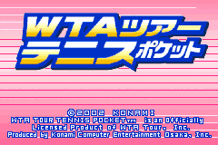

WTA Tour Tennis Pocket (Japan)
EEPROM 4K VRAM Tile Sheet
Cartridge Identity
- Game Code
ACIJ(FamilyACI)- Header Title
WTATOUR- Maker / Revision
A4/ rev0- ROM Size
- 8.0 MiB (8,388,608 B)
- Save Media
EEPROM 4K- SHA-256
8d28cc42c7637731f8d254111b80f4751e6c35765ab7b6c1987a527283972f01- Engine / SDK Group
comm-069(2 families)
Screenshots


ROM Assets, Compression & Audio
- BIOS Compression
- LZ77 (
0x10): 172 streams · RLE (0x30): 0 streams - ROM Pointer Tables
- 80 tables (0 pointing to validated compressed streams)
- SDK Backup Tags
EEPROM_V122- VRAM / Palette Snapshot
- 777 non-zero 8×8 tiles · 6 palettes · Direct ROM matches: 0 VRAM blocks, 0 palette blocks

Hardware MMIO Subsystems
ppu_display0x80009f0,0x8000e14,0x8000f84,0x80042e0,0x8004d9c,0x801d184,0x801d598,0x801dad8,0x801ed24